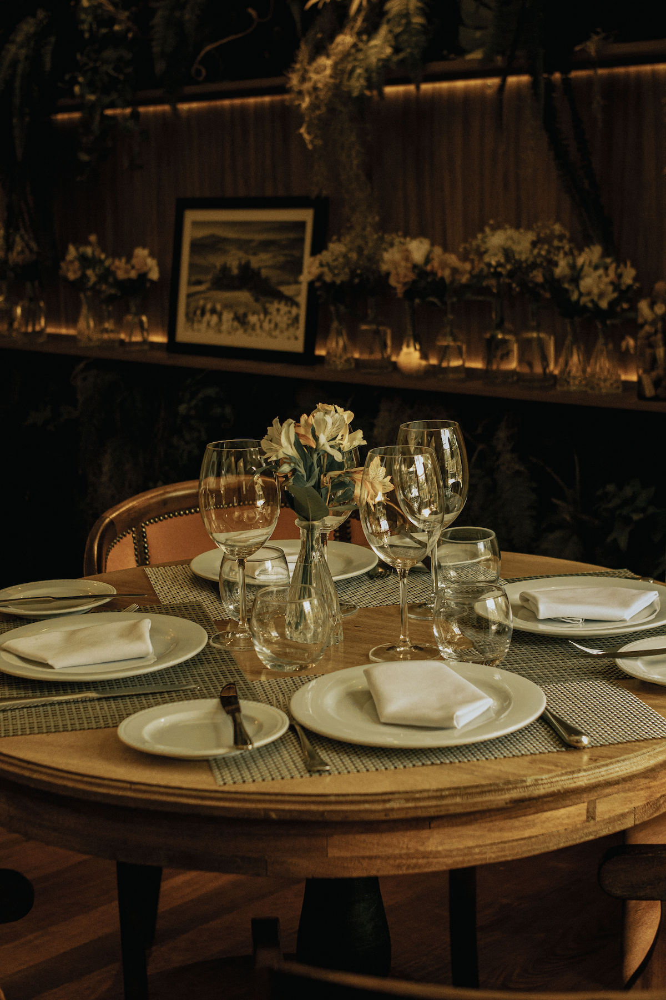

Adını Bursa’nın antik kimliği Prusa’dan alan mutfağımızda, yerel üreticilerden özenle seçilen mevsimsel ürünleri modern gastronomi teknikleriyle buluşturuyoruz.
Odun ateşinin doğal dokunuşu, yavaş pişirme yöntemleri ve özenle hazırlanan soslarla her tabakta dengeli bir lezzet hikayesi sunuyoruz.
Sade sunumlar, seçkin mahzen eşleşmeleri ve sıcak bir atmosfer eşliğinde her akşamı unutulmaz bir sofraya dönüştürüyoruz.
Hikayemizi Keşfedin →
INFO@PRUSABISTRO-PROJE.COM TEL: +90 (000) 000 16 16
Özel davetler, grup organizasyonları veya menümüz hakkında merak ettikleriniz için bizimle iletişime geçebilirsiniz.